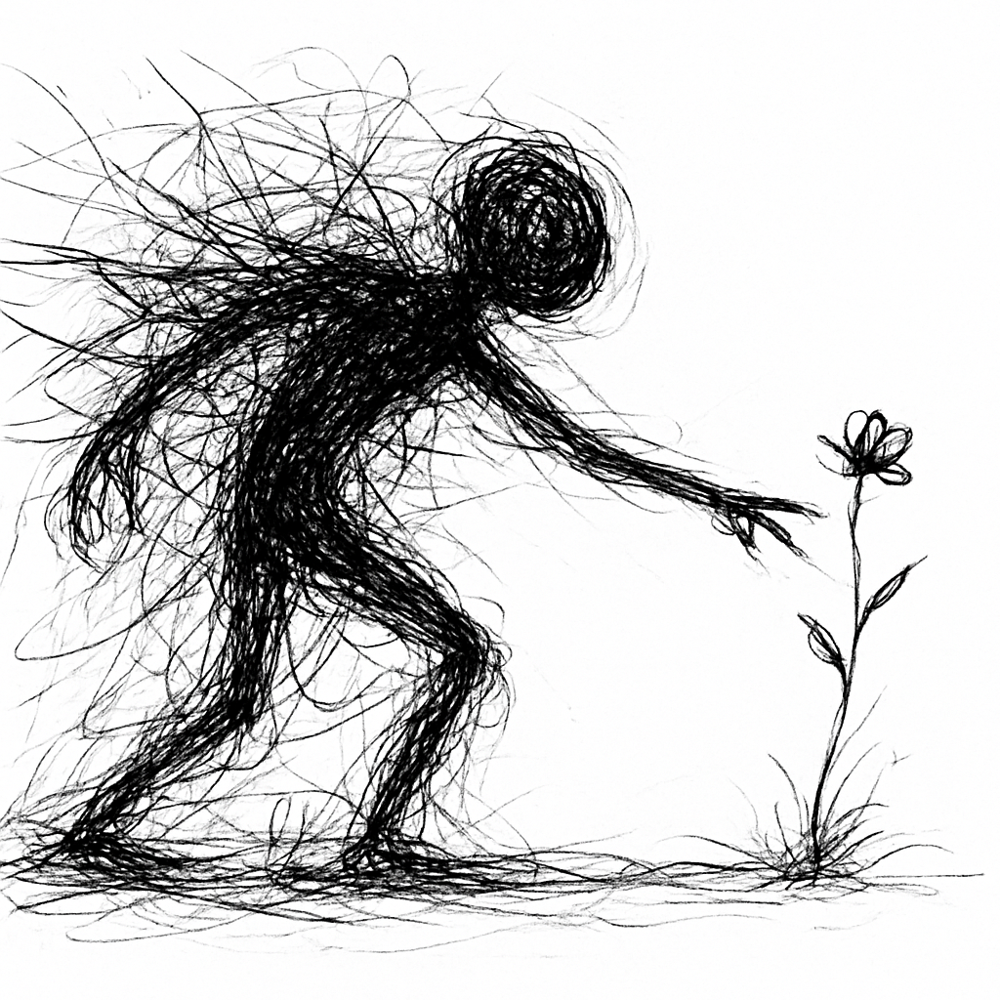
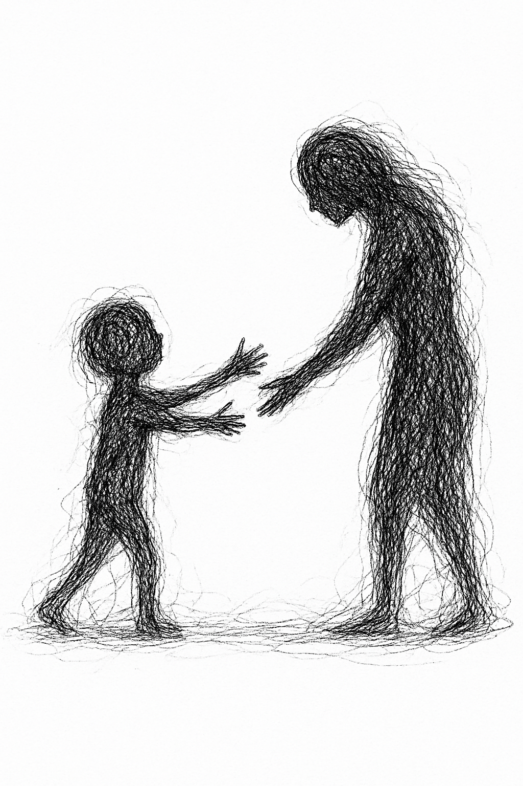
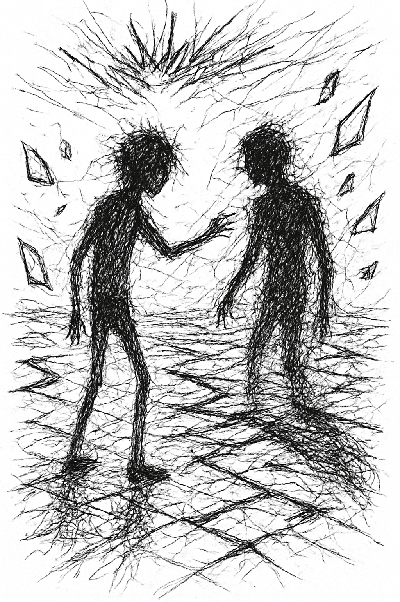
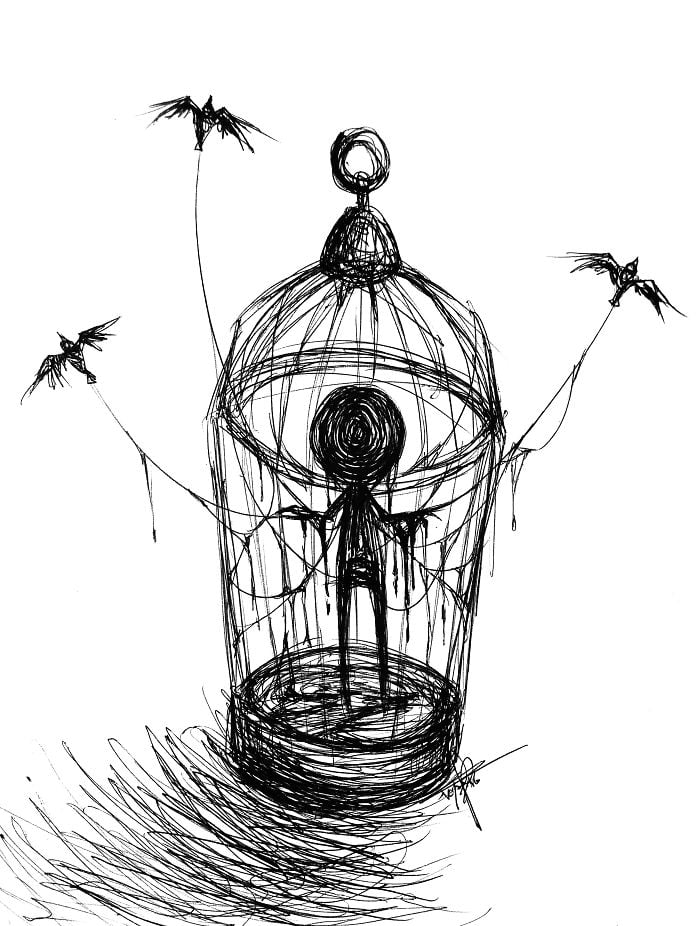
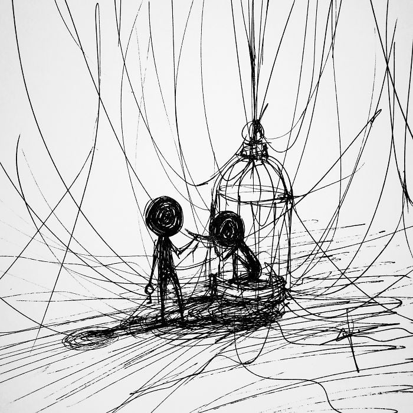

Tout commence par un souffle...
Dans le silence, un battement
Dans l’ombre, une lueur
Le monde s’ouvre, et l’existence respire pour la première fois

Tout commence par un souffle...
Dans le silence, un battement
Dans l’ombre, une lueur
Le monde s’ouvre, et l’existence respire pour la première fois

Les premiers pas hésitants ouvrent le chemin
Le rire éclate, pur et insouciant
Chaque découverte est un trésor
Le monde devient un terrain de jeu infini
Un ado se débat avec une vie vide de sens, coincé entre un quotidien répétitif,
un système scolaire oppressant et des adultes sourds à sa détresse.
Il cache son mal-être derrière des sourires forcés, étouffé par des attentes absurdes. En colère, paumé, révolté,
il écrit, joue, lis, se renferme pour ne pas exploser, pour garder un peu de contrôle.
Parce qu’au fond, même s’il prétend s’en foutre… il espère qu’on l’écoute.


L’âge adulte s’ouvre comme une porte lourde après les couloirs brumeux de l’adolescence. On croyait trouver derrière elle la clarté,
une route bien tracée. Mais ce n’est qu’un autre dédale, plus vaste, plus silencieux.
L’adolescent perdu devient un adulte qui avance à tâtons, chargé de responsabilités qu’il n’a pas choisies vraiment,
comme si la vie lui avait tendu un sac de pierres sans lui demander son avis.
Les rêves d’hier, ces étoiles brillantes, s’éteignent peu à peu.
On se retrouve à jongler entre les factures, les emplois du temps serrés, les attentes de la société.
Les passions d’antan sont reléguées au fond d’un tiroir poussiéreux, remplacées par des tâches quotidiennes qui semblent étouffer l’étincelle de vie.
On se lève le matin, on suit le rythme imposé, on joue le rôle attendu. Mais au fond, une question lancinante persiste
grandir, est-ce vraiment s’accomplir… ou simplement apprendre à mieux porter ses chaînes ?
La vieillesse est l’heure du crépuscule, mais ce n’est pas une nuit brutale :
c’est un ciel lentement teinté d’or et de pourpre, où chaque rayon porte la mémoire des jours passés. Le corps se fait plus fragile, les pas plus hésitants, mais l’âme, elle, gagne en profondeur.
Ce que la jeunesse cherchait dans le tumulte, ce que l’âge adulte poursuivait dans l’effort, la vieillesse l’accueille dans le silence.
On découvre alors que la vie n’était pas une course, mais une marche. Que les chutes, les erreurs, les regrets n’étaient pas des fardeaux, mais des pierres précieuses polies par le temps.
L’adulte inquiet devient un vieillard apaisé, qui sait que rien n’est permanent, et que c’est précisément là que réside la beauté.
La vieillesse n’est pas seulement la proximité de la fin, elle est aussi la clairvoyance de l’ensemble.
Elle voit le chemin dans son entier : les errances de l’adolescence, les luttes de l’âge mûr, les joies et les pertes — tout cela devient un seul tissu, riche et cohérent.
Le vieillard, assis face au monde, n’attend plus de conquérir, mais de transmettre. Sa parole est un feu doux : elle éclaire sans brûler.
Ainsi, la vieillesse respire la sagesse : elle enseigne que vivre n’était pas dominer, mais apprendre à laisser aller ;
que la véritable victoire n’était pas d’accumuler, mais d’avoir su aimer ; et que chaque fin, loin d’être une chute, est un retour à l’essentiel.

La mort enseigne que chaque instant est précieux, car il ne reviendra jamais.
Rappelle que rien n’est à nous : ni le temps, ni les biens, ni les êtres. Tout est prêté.
Elle montre que la vraie richesse n’est pas ce qu’on accumule, mais ce qu’on transmet.
Elle apprend à aimer sans attendre, car nul ne connaît la durée du voyage.
Elle révèle que vivre, ce n’est pas repousser la fin, mais marcher avec elle en paix.